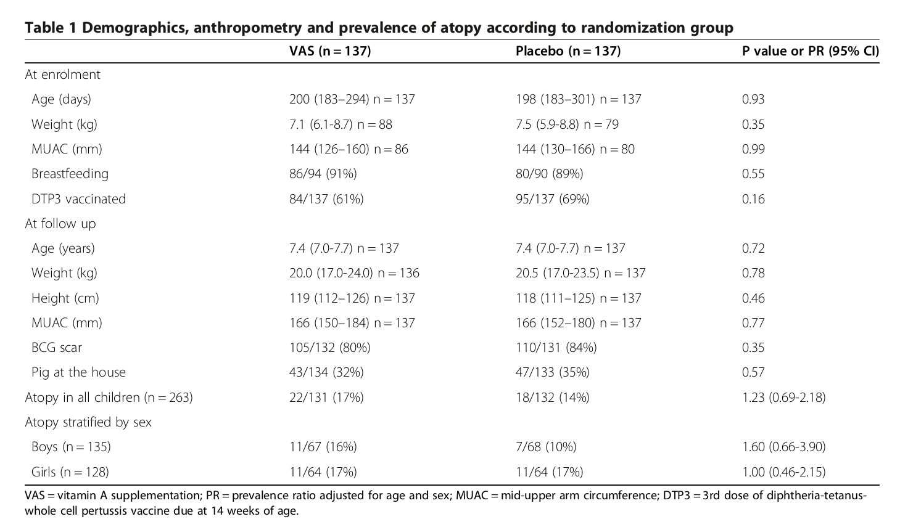

|

../../cm-ucl/corpus-oa-pmr-v02/10.1186_1471-2431-13-190/tables/table1/table.png
|
|
VAS (n = 137) |
Placebo (n = 137) |
P value or PR (95% CI) |
| At enrolment |
|
|
|
| Age (days) |
200 (183–294) n = 137 |
198 (183–301) n = 137 |
0.93 |
| Weight (kg) |
7.1 (6.1-8.7) n = 88 |
7.5 (5.9-8.8) n = 79 |
0.35 |
| MUAC (mm) |
144 (126–160) n = 86 |
144 (130–166) n = 80 |
0.99 |
| Breastfeeding |
86/94 (91%) |
80/90 (89%) |
0.55 |
| DTP3 vaccinated |
84/137 (61%) |
95/137 (69%) |
0.16 |
| At follow up |
|
|
|
| Age (years) |
7.4 (7.0-7.7) n = 137 |
7.4 (7.0-7.7) n = 137 |
0.72 |
| Weight (kg) |
20.0 (17.0-24.0) n = 136 |
20.5 (17.0-23.5) n = 137 |
0.78 |
| Height (cm) |
119 (112–126) n = 137 |
118 (111–125) n = 137 |
0.46 |
| MUAC (mm) |
166 (150–184) n = 137 |
166 (152–180) n = 137 |
0.77 |
| BCG scar |
105/132 (80%) |
110/131 (84%) |
0.35 |
| Pig at the house |
43/134 (32%) |
47/133 (35%) |
0.57 |
| Atopy in all children (n = 263) |
22/131 (17%) |
18/132 (14%) |
1.23 (0.69-2.18) |
| Atopy stratified by sex |
|
|
|
| Boys (n = 135) |
11/67 (16%) |
7/68 (10%) |
1.60 (0.66-3.90) |
| Girls (n = 128) |
11/64 (17%) |
11/64 (17%) |
1.00 (0.46-2.15) |
../../cm-ucl/corpus-oa-pmr-v02/10.1186_1471-2431-13-190/tables/table1/table.svg.html
|